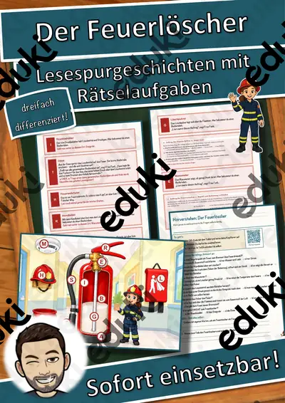

Verbrennung, Feuer und Sauerstoff: Arbeitsblätter für Klasse 5–9 (Chemie)
Verbrennung ist die erste chemische Reaktion, die viele Lernende bewusst erleben. Feuer braucht Brennstoff, Sauerstoff und Zündtemperatur, daraus folgen Brandschutz und Löschen.
Typische Bausteine der Einheit sind Verbrennung, Sauerstoff und Oxidation; darauf aufbauend kommen Feuerdreieck, Löschen und Brandschutz zur Sprache.
Die Lehrpläne der Länder sehen das Thema im Fach Chemie vor, in der Regel in der Sekundarstufe I (Klasse 5–9). Als Ziel gilt: die Schülerinnen und Schüler erklären die Voraussetzungen von Verbrennung und leiten Löschverfahren ab.
Für den Einstieg in Verbrennung, Feuer und Sauerstoff bieten sich Aufgaben zu Verbrennung an, zum Üben solche zu Sauerstoff und Oxidation, zur Wiederholung vor einer Lernkontrolle ein Blick auf Brandschutz. Die Lösungen liegen bei, sodass im Unterricht niemand nachschlagen muss. Leistungsstarke und schwächere Lesende erhalten über die Lesespurgeschichten Texte in drei Stufen.
Aus unserem Katalog gehören 11 Materialien zu diesem Thema, darunter Der Kaminofen, Das Feuerzeug und Der Feuerlöscher. Der Bestand umfasst 3 Lesespurgeschichten, 2 Prüfungstrainings und 6 Lückentexte mit Hörverstehen und reicht über Klasse 5–8. Eine Kerze unter dem Glas, die erlischt, zeigt die Rolle des Sauerstoffs auf einfache Weise.
Das gehört zum Thema
Passende Arbeitsblätter und Materialpakete

Der Kaminofen – Verbrennung und Kohlenmonoxid – Lesespurgeschichte mit Rätselaufgaben (Klasse 8)

Das Feuerzeug – Lesespurgeschichte mit Rätselaufgaben (Klasse 8)

Der Feuerlöscher – Lesespurgeschichte mit Rätselaufgaben (Klasse 8)

Die Verbrennung – Prüfungstraining Chemie (Klasse 8)

Oxidation und Verbrennung – Prüfungstraining Chemie (Klasse 8)

Sauerstoff Lückentext mit Wortspeicher Hörverstehen und Suchsel

Wasserstoff Lückentext mit Wortspeicher Hörverstehen und Suchsel

Feuer Lückentext mit Wortspeicher Hörverstehen und Suchsel

Kohlenstoff Lückentext mit Wortspeicher Hörverstehen und Suchsel

Feuerzeug Lückentext mit Wortspeicher Hörverstehen und Suchsel

Feuerstein Lückentext mit Wortspeicher Hörverstehen und Suchsel
Häufige Fragen
Für welche Klassenstufe passen die Arbeitsblätter zu Verbrennung, Feuer und Sauerstoff?
Die 11 Materialien zu diesem Thema sind für Klasse 5–8 ausgelegt, die meisten davon für Klasse 6. Einzelne Titel lassen sich mit Anpassung auch eine Stufe darunter oder darüber einsetzen.
Welche Inhalte decken die Materialien zu Verbrennung, Feuer und Sauerstoff ab?
Behandelt werden unter anderem Verbrennung, Sauerstoff, Oxidation und Feuerdreieck. Welche Aspekte in Ihrer Klasse Vorrang haben, richtet sich nach dem Lehrplan Ihres Bundeslandes.
Wie setze ich Verbrennung, Feuer und Sauerstoff im Unterricht ein?
Eine Kerze unter dem Glas, die erlischt, zeigt die Rolle des Sauerstoffs auf einfache Weise. Danach genügt meist ein Material als Einstieg und eines zum Üben.
Mehr Material nach Fach und Klasse
Verwandte Lehrplanthemen
- Stoffe und Aggregatzustände (Chemie, Klasse 5–9)
- Atome, Elemente und Periodensystem (Chemie, Klasse 8–10)
- Säuren, Laugen und Salze (Chemie, Klasse 8–10)
- Das alte Ägypten (Geschichte, Klasse 4–7)